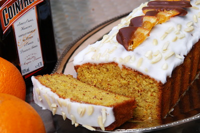

| Zutaten: | |
| 200 g | Margarine oder Butter |
| 200 g | Zucker |
| 1 Prise | Salz |
| 4 | Eier |
| 150 g | gemahlene Mandeln |
| 2 | Orangen |
| 5 El | Cointreau |
| 200 g | Mehl |
| 1 Tl | Backpulver |
| 150 g | Puderzucker |
| Handvoll | Mandelscheiben oder Mandelstifte |
| wenige | kandierte Orangenscheiben |
Die Butter weich rühren.
Zucker und Salz darunter rühren.
Ein Ei nach dem anderen darunter rühren und weiter rühren, bis die Masse hell ist.
Die gemahlenen Mandeln zugeben.
Die Schale von den 2 Orangen abreiben und zugeben.
Die Orangen auspressen und den Saft (ca. 2dl) dazugiessen.
2 Esslöffel Cointreau darunter mischen.
Mehl und Backpulver dazugeben und gut rühren.
Die 28-30 cm lange Cakeform mit Backtrennpapier auskleiden.
Die Masse einfüllen.
Den Ofen vorheizen und 50 Minuten bei 180°C backen.
Nach dem Erkalten mit Glasur beziehen. Dazu 150g Puderzucker mit Cointreau knapp flüssig anrühren.
Mit Mandelsplittern oder Mandelstiften bestreuen.
Wenn vorhanden, mit kandierten Orangenscheiben garnieren.
Hält in Folie Eingepackt im Kühlschrank 4-5 Tage.
Betty Bossi - Kuchen, Cakes und Torten, Seite 60
Sieht toll aus, hält aber nicht ganz so viel im Geschmack. Gelingt gut. Er schmeckt zart nach Orange und erinnert ein bisschen an Rüeblitorte. Der Guss mit dem Cointreau ist fein. Die kandierten Orangen hat Sandra selber gemacht in einem recht aufwendigen Osmose-Austausch-Verfahren. RE 5.5.2013
@LINKBACK_TAG@ @WAKELOCK@